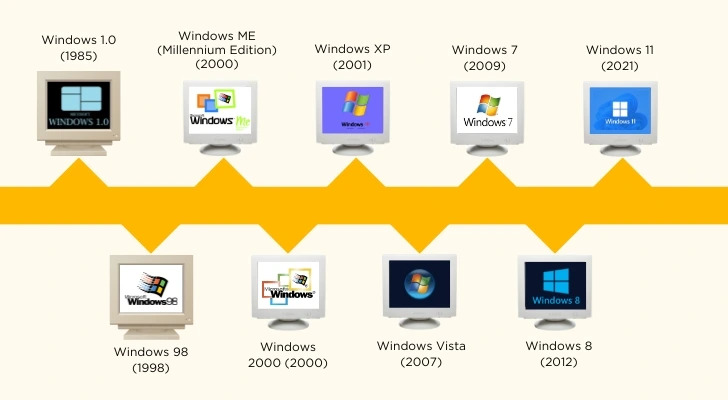
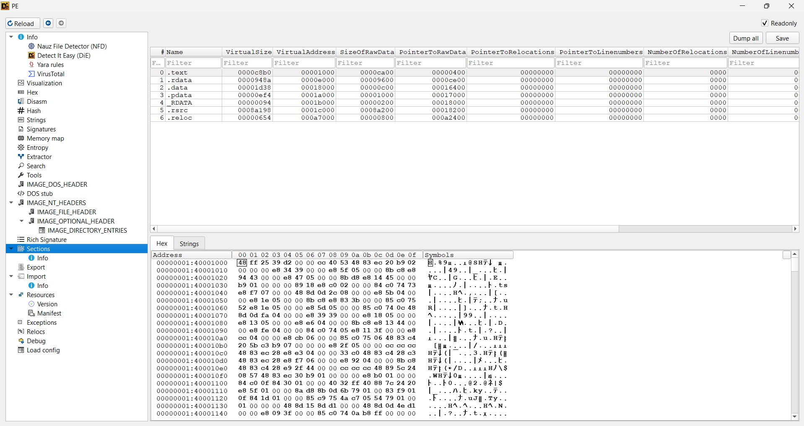

Microsoft Windows (Windows) là một họ hệ điều hành dựa trên giao diện người dùng đồ hoạ được phát triển và được phân phối bởi Microsoft. Nó bao gồm một vài các dòng hệ điều hành, mỗi trong số đó phục vụ một phần nhất định của ngành công nghiệp máy tính. Các dòng Windows hiện tại gồm Windows NT, Windows Embedded Compact và Windows Phone; chúng có thể bao gồm các phân họ, ví dụ như Windows Embedded Compact (Windows CE) hoặc Windows Server. Các dòng gia đình Windows đã bị ngừng gồm Windows 9x, Windows Mobile và Windows Phone.
Windows OS evolution:

Trong bài viết này mình sẽ giới thiệu các khái niệm về Windows
liên quan tới việc viết & phân tích malware.
Một số tool phổ biến mà mình sử dụng khi phân tích malware trên Windows:
- PEiD: Phần mềm dùng để detect packer của file exe.
- IDA Pro: Disassembler, decompiler.
- Detect It
Easy: Dùng để detect packer, compiler, thông tin file exe,... (best).
- Resource Hacker: Dùng để extract resource từ file exe.
Kernel32.dll là một trong những file DLL thực hiện tính năng quan trọng như quản lí và phân bổ memory, files và phần cứng.
Advapi32.dll chứa các hàm liên quan đến security, registry, event log, service control manager, và file system.
User32.dll chứa các hàm liên quan đến giao diện người dùng như tạo cửa sổ, xử lí message, và các hàm liên quan đến các control.
Gdi32.dll chứa các hàm liên quan đến graphic device interface như vẽ hình, text, và các hàm liên quan đến font.
Ntdll.dll chứa các hàm liên quan đến kernel mode như memory management, process và thread management, và các hàm liên quan đến system.
Wsock32.dll và ws2_32.dll chứa các hàm liên quan đến network như socket và các hàm liên quan đến network.
Wininet.dll chứa các hàm liên quan đến internet như http, ftp, và các hàm liên quan đến internet.
Đối với file .exe, chúng ta có thể dễ dàng chạy bằng cách double click. Nhưng đối với file DLL thì khác. Thông thường chúng ta sẽ cần một file exe khác để chạy file DLL đó. Một cách khác để chạy file DLL là thông qua rundll32.exe. Ví dụ, để chạy file DLL có tên là ProjectMeow.dll với hàm export là HelloWorld, chúng ta có thể sử dụng lệnh sau trong cmd.
rundll32.exe ProjectMeow.dll, HelloWorld
Thay vì gọi hàm bằng tên cũng có thể gọi qua ordinal của hàm đó, ví dụ thay HelloWorld ở lệnh trên bằng #5.
Lưu ý rằng không phải file DLL nào cũng có thể sử dụng rundll32 để chạy. Nếu file DLL export ra class thay vì function thì không thể chạy bằng rundll32.
Khi đọc tên các hàm của Windows, có thể ở đầu hay cuối tên sẽ có một số
kí tự đặc biệt dễ gây lú. Ví dụ, nếu một hàm có hậu tố Ex
(CreateWindowEx), điều đó có nghĩa là hàm đó là một phiên bản mở rộng
của hàm gốc (ví dụ như CreateWindow) mà không tương thích với phiên bản
cũ đó nữa. Nếu được cải tiến 2 lần thì hậu tố Ex sẽ được lặp lại 2 lần.
Hay nếu hàm có hậu tố W hay A (CreateDirectoryW), chữ cái này thể
hiện kiểu dữ liệu của tham số string mà hàm đó nhận. W thể hiện kiểu dữ
liệu wide string (2 bytes cho mỗi kí tự), còn A thể hiện kiểu dữ liệu
ansi string (1 byte cho mỗi kí tự). Ansi là bản mở rộng của ASCII với
thêm 128 kí tự (8 bit vs 7 bit).
Về cấu trúc của file PE, mình đã giới thiệu trong bài viết
Reverse Engineering Overview. Khi phân tích một file PE, bước đầu tiên mình sẽ ném nó vào DIE để
xem thông tin cơ bản. DIE (hay Detect It Easy) là một công cụ rất tốt để
detect packer, compiler, và xem các thông tin cơ bản của file exe. Mình
cũng có thể dễ dàng ném file lên VirusTotal để test một cách nhanh
chóng.

Như trên ảnh là thông tin các section của một file PE không bị packed. Dù DIE có thể detect file có bị packed hay không, chúng ta vẫn có thể dễ dàng thấy điều đó dựa vào những thông tin về section. Ví dụ section .text, .data,... có raw size là 0 mà virtual size (virtual size là kích thước khi section biến thành segment trong bộ nhớ) lại lớn, hay xuất hiện những section có tên kì lạ như .abcxyz.
Bên cạnh đó, còn có section .rsrc chứa các resource như icon, bitmap, string,... Mình có thể dùng Resource Hacker để extract các resource đó. Có những trường hợp malware hay kể cả các ứng dụng bình thường sẽ giấu file hay driver vào resource. Resource Hacker cũng giúp mình trích xuất những thứ đó.